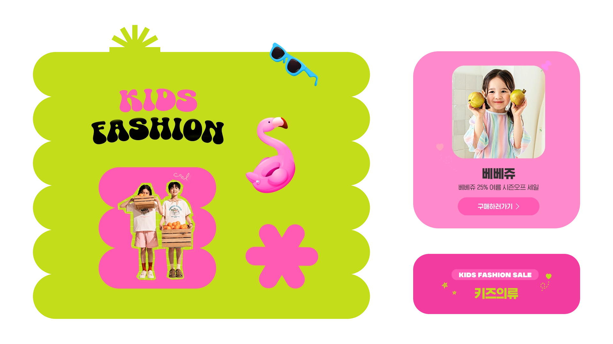
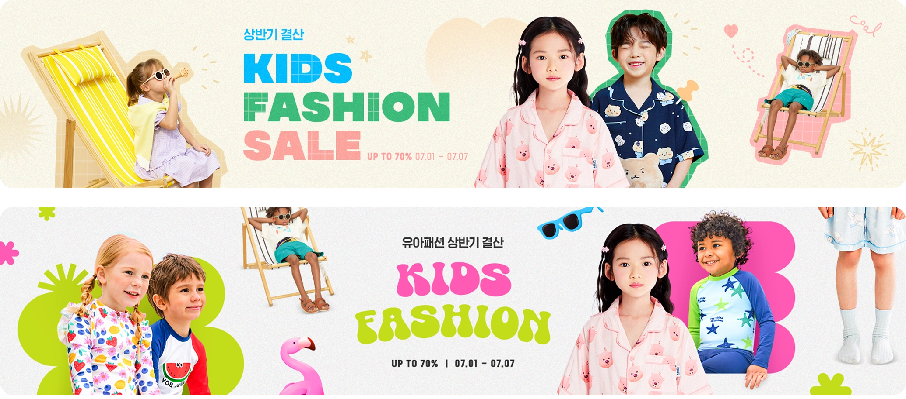
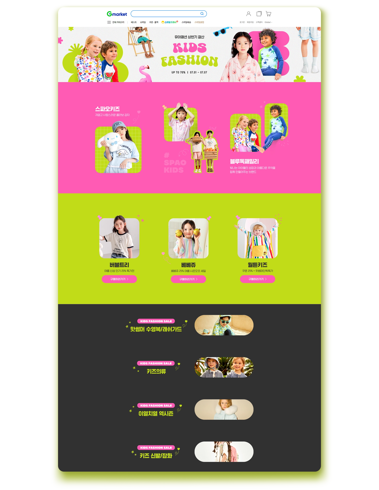

web promotion
G마켓 유아동 패션 24ss 브랜드위크
유아동 봄·여름 시즌 브랜드위크 프로모션 디자인을 진행했습니다. 활용 가능한 이미지의 톤이 사랑스럽고 발랄한 무드였기에, 이를 가장 효과적으로 드러낼 수 있는 레이아웃을 기획했습니다. A안은 파스텔 톤을 중심으로 부드럽고 사랑스러운 분위기를, B안은 채도 높은 이미지를 활용해 경쾌하고 귀여운 느낌을 강조하는 방향으로 제안했습니다.


Final Design
도형과 여름 특유의 경쾌하고 통통 튀는 시즌 무드를 살린 B안으로 최종 확정되어 디자인을 진행했습니다. 하단 스토리카드와 이벤트 영역 또한 상단과 동일한 도형과 컬러를 적용해 전체적으로 통일감을 주었습니다.
